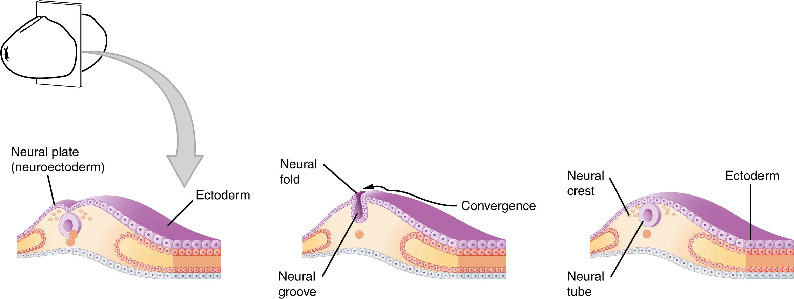
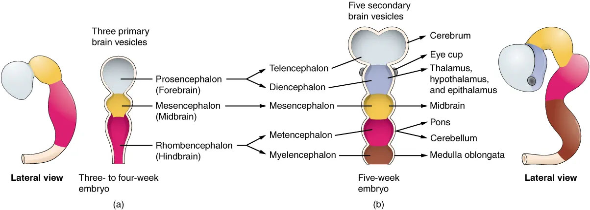

7.2: Embryonic Stage
The embryo is initially formed through fertilization, which occurs when a sperm cell and an egg cell unite into a single cell. This fertilized egg cell, or zygote, starts dividing through the process of mitosis to generate the cells that make up an entire organism. Sixteen days after fertilization, embryonic cells form three layers that develop into different body tissues (Betts et al., 2022). The endoderm, or inner tissue, is responsible for generating the lining tissues of various spaces within the body, such as the mucosae of the digestive and respiratory systems. The mesoderm, or middle tissue, gives rise to most of the muscle and connective tissues. Finally the ectoderm, or outer tissue, develops into the body’s outer layer of skin, hair, nails, as well as the nervous system. It is probably easy to see that the outer tissue of the embryo becomes the outer covering of the body, but how is it responsible for the nervous system?[1]
Neural Tube
Two weeks into embryonic development, the human nervous system begins to form. As the embryo develops, a portion of the ectoderm differentiates into the precursor for the tissue of the nervous system (Betts et al., 2022). Cells in this region form a neural plate that begins to fold inward to form a neural groove that is lined on each side by a neural fold. These two neural folds eventually fuse together to form the neural tube (Figure 1) and set up the development of the brain and spinal cord. Cells from the neural folds then separate from the ectoderm to form a cluster of cells referred to as the neural crest, which runs lateral to the neural tube. These neural crest cells migrate away from the nascent central nervous system (CNS) that will form along the neural groove and develop into several parts of the peripheral nervous system (PNS) including the enteric nervous system that governs the function of the gastrointestinal tract.

During the third week of embryonic development, the anterior end of the neural tube begins developing into the brain, and the posterior portion begins developing into the spinal cord. This basic arrangement of tissue in the nervous system gives rise to more complex structures by the fourth week of development.[2]
Primary Vesicles
As the anterior end of the neural tube starts to develop into the brain, it generates three primary vesicles: the forebrain (prosencephalon), the midbrain (mesencephalon), and the hindbrain (rhombencephalon) (Betts et al., 2022). The forebrain is the upper-most vesicle, the midbrain is the next vesicle, and the hindbrain is the lowest vesicle. One way to think about brain organization uses these three divisions—forebrain, midbrain, and hindbrain (Figure 2).[3]

Secondary Vesicles
By week 5, the three primary vesicles differentiate further into five secondary vesicles (Betts et al., 2022) (Figure 2). The forebrain enlarges into two new vesicles called the telencephalon and the diencephalon. The telencephalon will become the cerebrum—the largest part of the adult brain which contains the lobes of the cerebral cortex, hippocampus, and basal ganglia. The diencephalon will give rise to several structures including the thalamus (the central relay hub for sensory signals) and hypothalamus (involved in homeostasis and regulating functions including hunger, sleep, and mood).
A third secondary vesicle, the mesencephalon or midbrain, is composed of the tectum, the cerebral aqueduct, the tegmentum, and the cerebral peduncles. The midbrain is an established region of the brain at the primary vesicle stage and does not further differentiate into finer divisions. The rest of the brain develops around the midbrain, which is involved in many functions including head and eye movements, motivation, and reward.
The hindbrain develops into the final secondary vesicles, the metencephalon and myelencephalon. The metencephalon gives rise to the pons and cerebellum. The cerebellum accounts for about 10 percent of the mass of the brain and is an important structure for coordinated movement, posture, and cognition. The cerebellum connects to the rest of the brain via the pons, because the pons and cerebellum develop out of the same vesicle. Finally, the myelencephalon gives rise to the adult structure known as the medulla oblongata (involved in breathing, digestion, heart rate, blood pressure, etc.). The structures that arise from the midbrain and hindbrain, except for the cerebellum, are collectively considered the brain stem, which specifically includes the midbrain, pons, and medulla.
We first learned about the above structures in Chapter 2: The Brain and Nervous System. To understand the outcome of fetal brain development, it may help to return to Chapter 2 to review details of these structures in the adult brain.[4]
Media Attributions
- Spinal nerves © OpenStax is licensed under a CC BY-NC-SA (Attribution NonCommercial ShareAlike) license
- This section contains material adapted from: Betts et al., (2022). 13.1 The Embryologic Perspective. In Anatomy and Physiology 2e. OpenStax. Access for free at https://openstax.org/books/psychology-2e/pages/15-4-anxiety-disorders License: CC BY 4.0 DEED. ↵
- This section contains material adapted from: Betts et al., (2022). 13.1 The Embryologic Perspective. In Anatomy and Physiology 2e. OpenStax. Access for free at https://openstax.org/books/psychology-2e/pages/15-4-anxiety-disorders License: CC BY 4.0 DEED. ↵
- This section contains material adapted from: Betts et al., (2022). 13.1 The Embryologic Perspective. In Anatomy and Physiology 2e. OpenStax. Access for free at https://openstax.org/books/psychology-2e/pages/15-4-anxiety-disorders License: CC BY 4.0 DEED. ↵
- This section contains material adapted from: Betts et al., (2022). 13.1 The Embryologic Perspective. In Anatomy and Physiology 2e. OpenStax. Access for free at https://openstax.org/books/psychology-2e/pages/15-4-anxiety-disorders License: CC BY 4.0 DEED. ↵
A growing organism in the initial stages of development after fertilization.
A cell formed by the union of a female gamete (egg) with a male gamete (sperm).
Innermost of the three germ layers in a developing embryo.
Middle layer of the three germ layers in a developing embryo.
Outermost of the three germ layers in a developing embryo.
Formed when the neural plate folds inward and extends the entire length of the embryo.
Ridges of the ectoderm on the neural plate that form around the neural groove and fuse to form the neural tube.
The hollow longitudinal tube formed by the infolding of the neural plate and subsequent fusion of the neural folds. Sets the basis for development of the brain and spinal cord.
A temporary cluster of cells that originate from the side of the neural tube proximal to the epidermal layer. Neural crest cells give rise to diverse cell types that can support many different systems.
The portion of the nervous system that includes the brain and spinal cord.
All of the nerve cells that connect the central nervous system to all the other parts of the body.
The three primary vesicles include the prosencephalon (forebrain), mesencephalon (midbrain), and rhombencephalon (hindbrain).
One of the three primary vesicles. Also referred to as the forebrain.
One of the three primary vesicles. Also referred to as the midbrain.
One of the three primary vesicles. Also referred to as the hindbrain.
The five secondary vesicles include the telencephalon, diencephalon, mesencephalon, metencephalon, and myelencephalon.
Also referred to as the prosencephalon. The forward most part of the brain. Consists of the telencephalon and diencephalon.
Largest portion of the central nervous system and consists of the cerebrum and related structures.
Neural structure located deep in the brain that includes the thalamus and hypothalamus. Connects the midbrain to the forebrain.
Also referred to as the mesencephalon. The top-most portion of the brain stem. Consists of the tectum, the cerebral aqueduct, the tegmentum, and the cerebral peduncles.
The uppermost part of the midbrain.
Narrow, 15mm, channel that connects the third ventricle with the fourth ventricle and facilitates the transport of cerebrospinal fluid (CSF).
The ventral portion of the midbrain.
Two bundles of nerve fibers that are located in the ventral midbrain and connect the cerebrum to the brain stem.
Also referred to as the rhombencephalon. The lower portion of the brain stem. Consists of the metencephalon and myelencephalon.
The part of the hindbrain that develops into the cerebellum and pons.
The part of the hindbrain that develops into the medulla oblongata.
Part of the hindbrain. A bridge that connects the cerebral cortex with the medulla, and reciprocally transfers information back and forth between the brain and the spinal cord.
The distinctive structure at the back of the brain between the cerebrum and brainstem. Important for muscle control, such as balance and movement.
Extension of the spinal cord that forms the lowest part of the brain stem.
Composed of the medulla oblongata, pons, and the midbrain. The part of the brain that connects the cerebrum to the spinal cord.